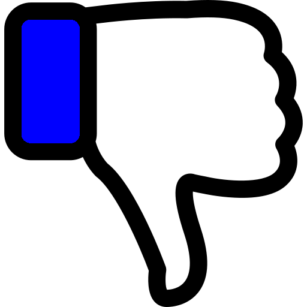

<ion-header>
  <ion-toolbar color="dark">
    <ion-title>ID: {{ id }}</ion-title>
    <ion-buttons slot="end">
      <ion-button color="secondary" (click)="closeModal()">Cerrar</ion-button>
    </ion-buttons>
  </ion-toolbar>
</ion-header>

<ion-content color="dark">
  <div class="text-center">
    <h3>{{ pregunta }}</h3>
  </div>
  <canvas id="myChart" width="400" height="400"></canvas>
  <div class="text-center">
    <button type="button" class="btn btn-success waves-effect waves-light" (click)="addVotePositivo()">
      
    </button>
    <button type="button" class="btn btn-danger waves-effect waves-light" (click)="addVoteNegativo()">
      
    </button>
  </div>
  <div class="text-center">
    <button type="button" class="btn btn-light waves-effect waves-light" (click)="addVoteNulo()">
      <span class="nulo">NULO</span>
    </button>
  </div>
</ion-content>